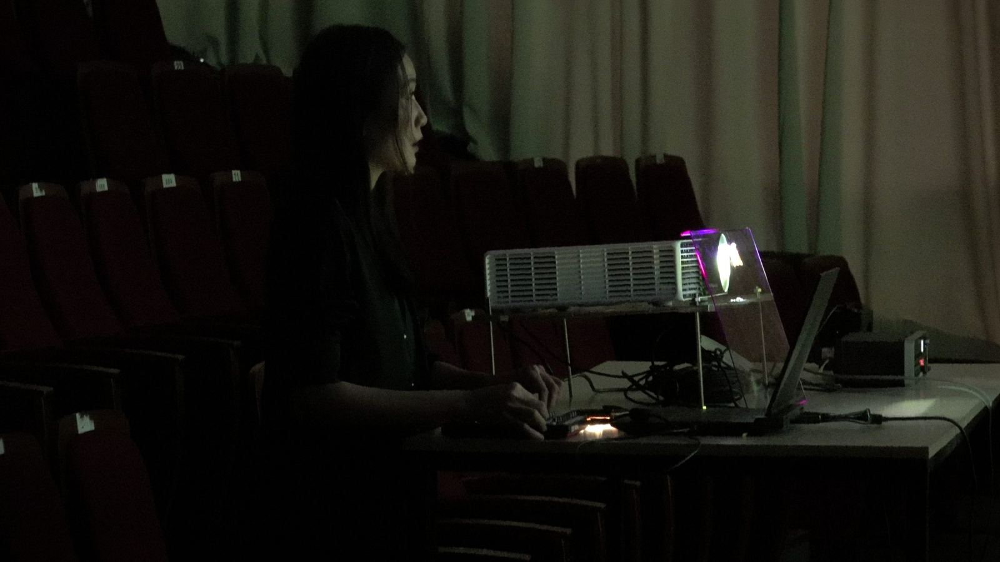
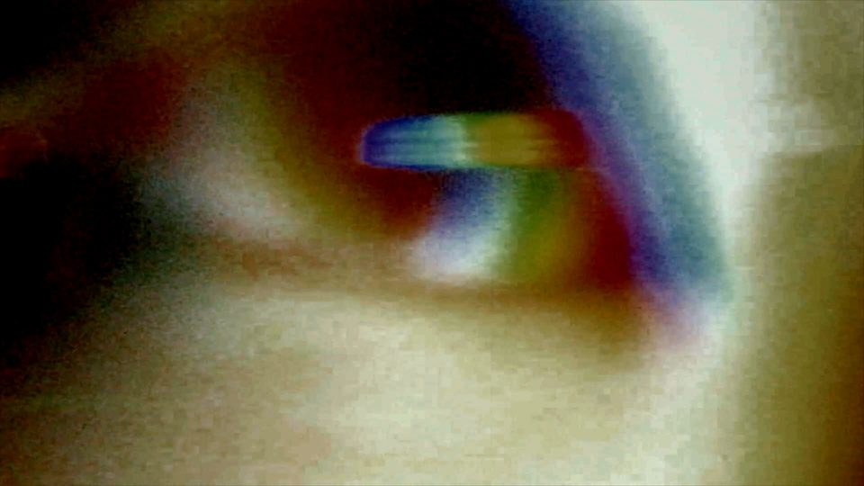
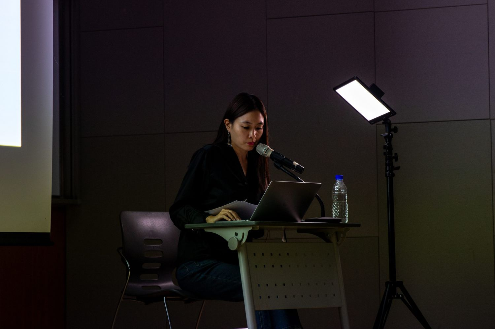

WORKS · FILM
임계Liminality

눈이 내린다. 창밖을 바라보는 눈, 교차하는 눈과 달, 그리고 그 시선을 담는 또 다른 눈동자가 흔들린다. 서로 마주 볼 수 없는 시선의 교차로에서 영화는 스스로 움직인다. 카메라는 창밖을 향하고, 프로젝터는 스크린을 비춘다. 서로 어긋난 위치에서 같은 곳을 바라보는 눈과 빛 사이, 우리는 결코 볼 수 없는 장면을 함께 상상한다.
Snow falls. Eyes gaze out of the window — eyes that cross with the moon, and another eye that holds that gaze begins to tremble. At the crossing of gazes that can never meet, the film begins to move on its own. The camera faces out of the window; the projector casts its light onto the screen. Between eyes and light looking at the same place from misaligned positions, we imagine together a scene we can never truly see.
비평Review
하늘에서 내린 눈, 무언가를 바라보는 눈, 카메라의 시선으로서의 눈, 이 모든 눈을 향한 당신의 눈, 바라봄. 이것은 눈들의 총체이자 눈들의 분화다. 《임계》는 제목 그대로 눈에서 눈으로, 시선에서 시선으로 이어지다 분간되고 뭉뚱그려졌다 달리 보이며 사라졌다 드러나는 시각 인지의 경계와 지경의 탐색이다. 빛의 산란과 굴절, 이미지의 중첩, 점묘화에 가까워지려는 픽셀화된 화면을 통해 시각화는 시험에 들고 무화(無化)에 이른다. 청각적 효과와 함께 어둠의 극장에서 비로소 체감될 감각의 임계, 임계의 감각이다.
— 정지혜 (영화평론가)
Snow falling from the sky, an eye that watches, the eye as the camera’s gaze, and your own eye turned toward all of these — watching. This is both the totality and the fragmentation of eyes. Liminality, as its title suggests, is a passage from eye to eye, from gaze to gaze: a search across the borders and territories of visual perception, where things blur together and reappear differently. Through the scattering and refraction of light, overlapping images and frames pixelated almost to the point of pointillism, visualisation is put to the test and pushed toward dissolution. Together with its sonic effects, this is a sensory threshold that can only be felt in the darkness of a theatre — the sensation of the threshold itself.
— Jihye jung, film critic
크레딧Credits
- DirectorKWON Heesue
- ProducerKWON Heesue
- CinematographerPARK Chowon, KWON Heesue, WANG Jieun
- EditorKWON Heesue
- SoundJANG JeongWoo, KWON Heesue
상영 · 전시Screenings & exhibitions
- World Premiere — 20252025
- 부산대학교 블랙박스 시리즈 2026 vol.2 — 2026년 10월 29일 · 부산대학교 기계관 대강당 · 《아이 엠》 《우리》 《임계》 라이브 스크리닝과 강연 《정점에서 다시 보기, 보기를 마주보기》29 October 2026 · Grand Auditorium (Room 207), Engineering Building, Pusan National University — eye am, we and Liminality, followed by the lecture “Revisiting the Summit, Facing the Act of Seeing”
- 《임계》 프로그램 2 — 전시 — 2024년 12월 18–21일 · 공간서로 2층, 서울 · 라이브 시네-퍼포먼스 버전18–21 December 2024 · Seoro Space, Seoul — live cine-performance version
《임계》는 영화 상영과 라이브 시네-퍼포먼스 두 가지 형식으로 이어진다. 라이브 버전은 카메라와 프로젝터, MIDI 컨트롤러를 무대 위에서 실시간으로 다루며 상영 자체를 공연으로 만든다.Liminality exists in two forms: a film and a live cine-performance in which camera, projector and MIDI controller are played in real time, turning the screening itself into a performance.
작품 영상은 상영·심사 목적으로 요청 시 제공합니다.A viewing link is available on request for screening and selection.


